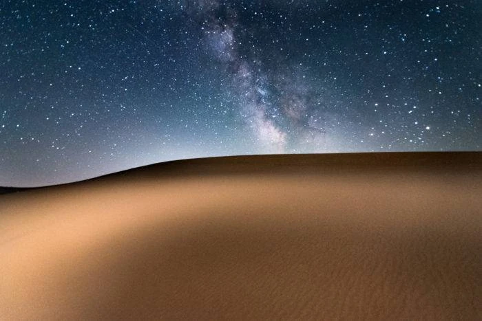

Explore

Welcome to the Rexburg, Idaho Chamber of Commerce website! We extend a warm invitation to explore the charming city of Rexburg, nestled in the heart of the beautiful Gem State. As you navigate through our site, discover the diverse array of businesses, events, and community initiatives that contribute to the vibrant fabric of Rexburg. From local eateries serving delectable delights to exciting community events that bring neighbors together, Rexburg offers a unique blend of small-town charm and modern vitality. Whether you're a resident, a visitor, or a business owner, we encourage you to delve into all that Rexburg has to offer. Uncover the hidden gems, embrace the welcoming community spirit, and make the most of your Rexburg experience. Thank you for exploring with us, and we look forward to sharing the warmth and hospitality that define our wonderful city!
Messa Falls

At Upper Mesa Falls, a thunderous curtain of water – as tall as a 10-story building – pours over remnants of an ancient volcanic super-eruption. A mile south, Lower Mesa Falls repeats the performance, the river continually chiseling away at the solidified ash and lava. The beautiful Upper and Lower Mesa Falls are the last prominent waterfalls on the Snake River unaffected by manmade influences. A scenic walking path leads to excellent viewpoints.
Wedding venues

The Atrium is an elegant event venue nestled in the Hemming Village of Rexburg, Idaho. During the day the floor to ceiling windows draped in flowing material bring in an abundance of natural light, and at night the crystal chandeliers, twinkling stair case lights, and street lamps create a magical glow that bounces light off of the wall size water fall and beautiful arbor doors.
Family Fun

Rexburg Rapids is the perfect place to have some fun in the sun! Make this summer last by bringing your family and friends to our pools and slides. This water park features many amazing fun attractions to help you enjoy the warm outdoor weather. Rexburg Rapids has trained lifeguards on duty to make sure you and everyone you love are safe! We also host birthday parties and swimming lessons!
Sand Dunes
With 10,600 acres of white quartz sand blown into 400 foot high dunes, this is the ultimate playground for off-road vehicle enthusiasts. Today the St. Anthony Sand Dunes are home to a Wilderness Study Area and one of the largest herds of wintering elk in the United States.
Rexburg Tabernacle

The Rexburg Tabernacle was built in 1911 and served as meeting house for religious services until it was acquired by the City of Rexburg in 1980 and turned into a civic center. The two shades of rock used in the construction were quarried on the Rexburg Bench and in the Lyman area south of Rexburg. The Tabernacle was placed in the National Register in 1974 citing its uniqueness in Idaho, both by virtue of its style and its association with the Mormon settlement. Architecturally, it is one of the very few Italianate church buildings in the state, and vastly exceeds all others in that style in character, size and imaginative use of stone.